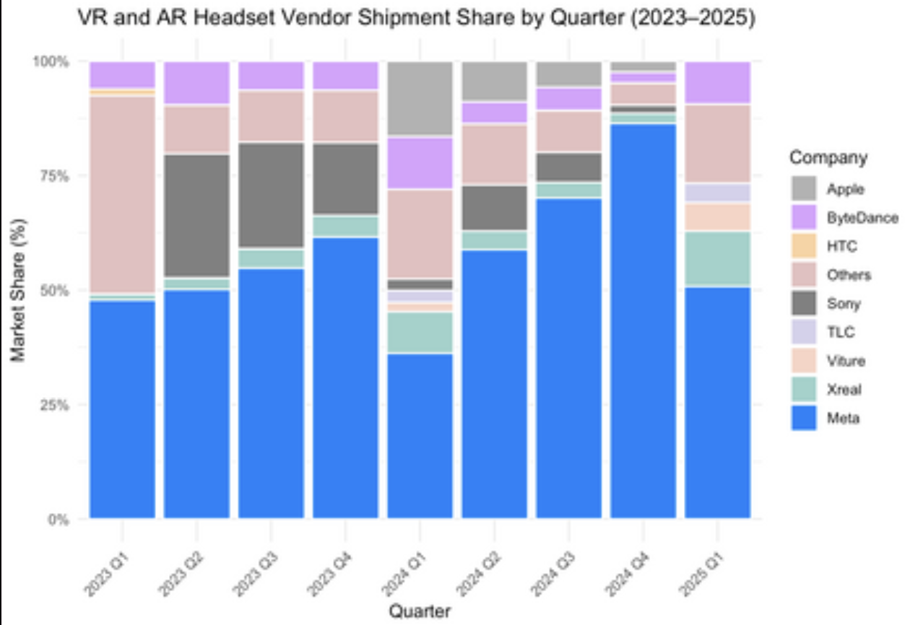
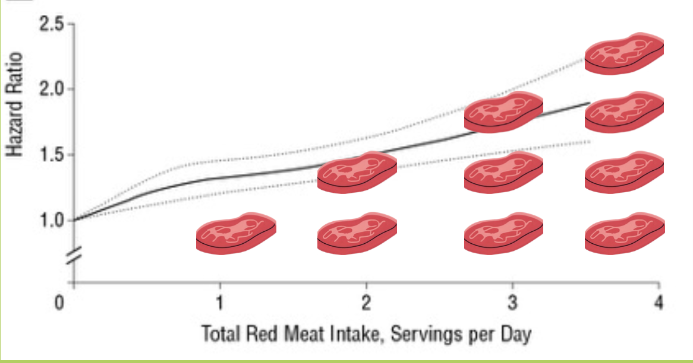

Data Storytelling
Presentations, infographics, and communication projects designed to make complex data accessible to non-technical audiences, emphasizing clear narrative, strong visuals, and actionable insight.
Butterfly iQ: Medical Device Market Analysis
An executive-style analysis of the Butterfly iQ handheld ultrasound device, connecting product positioning, clinical use cases, and the data science pipeline behind portable medical imaging.
Data Science & NLP News Digests
Weekly research and industry briefings that turn new data science and NLP developments into concise, structured updates for a technical audience.

MetaSky: Product Strategy Infographic & Presentation
A product strategy infographic and presentation presenting market context, proposed audiences, and competitive positioning into a visual narrative for non-technical stakeholders.

Health Communication Data Narrative
A self-directed health communication project combining public-health evidence, visual storytelling, and audience-centered messaging into a polished presentation.